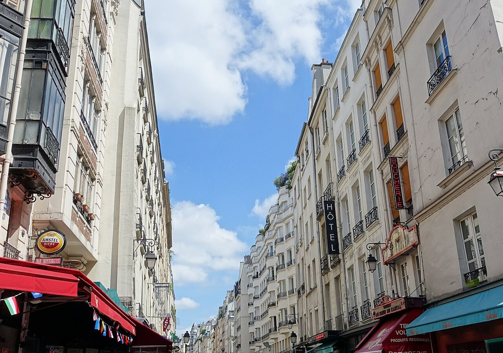
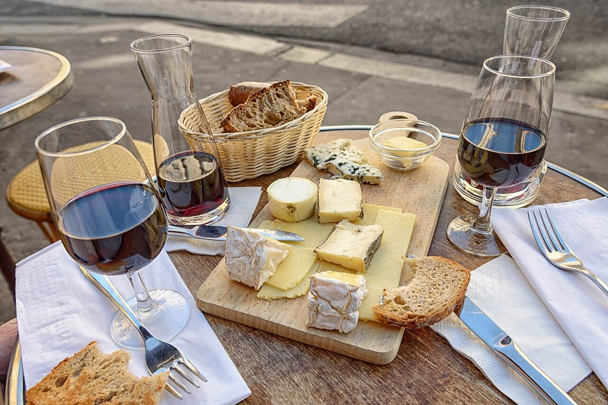

Worum geht es?
Frankreich ist eines der bekanntesten Länder der Welt und steckt trotzdem voller Überraschungen. In diesem Projekt erklären wir Frankreich geografisch und schauen hinter die Klischees, die man mit dem Land verbindet. Das machen wir aus drei Blickwinkeln: Naturraum (A), Bevölkerung (B) und Kultur (E). Am Ende führt alles auf eine interaktive Karte, auf der man Frankreich Ort für Ort entdecken kann.
„Wie lässt sich Frankreich geografisch erklären, und wann wird aus einer Besonderheit ein Stereotyp über ein ganzes Land?“
Bereich A
Lage, Gebirge, Flüsse und zwei Küsten. Wie formt die Landschaft das Leben der Menschen, und welche Klischees entstehen daraus?

Bereich B
68 Millionen Menschen, Altersstruktur, Sprachen und Migration. Wie verteilt sich die Bevölkerung zwischen Paris und der „leeren Diagonale“?

Bereich E
Kultur, Alltag, Baguette und Streik, dazu die Methode der Raumanalyse. Wann wird aus einer Besonderheit ein Stereotyp?
Bereich A: Wo liegt das Land?
① Orientierung: Frankreich im Überblick
Hier siehst du Frankreich mit seinen Grenzen, Nachbarländern, wichtigen Städten und den großen Landschaften auf einen Blick:
Bedeutung von Klima & Naturraum fürs Leben
Frankreich liegt in Westeuropa, mit dem Atlantik im Westen, dem Mittelmeer im Süden und dem Ärmelkanal im Norden. Es grenzt an acht Länder. Durch diese Lage ist das Land sehr vielfältig.
Im Osten und Süden liegen hohe Gebirge, die Alpen und die Pyrenäen. Sie sind natürliche Grenzen und liefern Wasserkraft. Der Mont Blanc in den Alpen ist mit rund 4.800 Metern der höchste Berg Westeuropas. Große Flüsse wie Loire, Seine, Rhône und Garonne verbinden die Regionen und werden seit langem für Handel und Verkehr genutzt.
In den flachen, fruchtbaren Gegenden um Paris und im Südwesten wird viel Landwirtschaft betrieben. Das milde Klima am Atlantik und am Mittelmeer ist gut für Ackerbau und Weinbau. So hängt zusammen, wo die Menschen leben und wovon sie leben.
Stereotypen-Check: Landschaft
Naturraum-Stationen auf der interaktiven Karte erkunden
Auf der Karte kannst du in Bordeaux und in der Auvergne sehen, wie der Naturraum den Alltag prägt.
Bereich B: Wie leben die Menschen?
Altersstruktur & demografischer Aufbau
In Frankreich leben rund 68 Millionen Menschen. Die Altersgruppen verteilen sich so:
(< 20 Jahre)
(20 bis 64 Jahre)
(65+ Jahre)
Frankreich hatte lange eine der höheren Geburtenraten in Europa, auch weil es viele Betreuungsplätze für kleine Kinder gibt. Früher lag sie bei etwa 1,8 Kindern pro Frau, inzwischen ist sie niedriger. Wie in anderen Ländern wird die Bevölkerung älter.
Sprachen, Vielfalt & „Leere Diagonale“
Die Menschen leben sehr ungleich verteilt. Allein im Großraum Paris wohnen über 12 Millionen, dazu kommen die Küsten. Von Nordosten bis zu den Pyrenäen zieht sich dagegen ein dünn besiedelter Streifen, den man die „leere Diagonale“ nennt.
Frankreich ist seit langem ein Einwanderungsland. Viele Menschen haben familiäre Wurzeln in Nordafrika, Westafrika oder Südeuropa.
Amtssprache ist Französisch. Daneben gibt es alte Regionalsprachen wie Bretonisch, Okzitanisch, Elsässisch, Baskisch und Korsisch, die heute nur noch wenige sprechen.
Stereotypen-Check: Die Menschen
Bevölkerungs-Hotspots auf der Karte untersuchen
Auf der Karte kannst du den Unterschied zwischen Paris und der Hafenstadt Marseille untersuchen.
Bereich E: Wie lebt & denkt man dort?
Landesweite Kulturthemen
Beim Essen ist das Baguette das bekannteste Beispiel. Seit 2022 gehört es zum UNESCO-Kulturerbe, und es werden jedes Jahr etwa 10 Milliarden gebacken. Trotzdem essen die Franzosen heute viel weniger davon als früher, im Schnitt nur noch ungefähr eine halbe Baguette pro Tag. Die Baskenmütze, die man für typisch hält, kommt eigentlich aus dem Südwesten und wird fast nur noch für Touristen getragen.
Auch das Streiken gehört dazu. Das Recht zu demonstrieren gilt seit der Revolution von 1789 als wichtig. Oft streiken aber nur einzelne Berufsgruppen wie die Bahn. Im Ausland wirkt es dann so, als stehe ganz Frankreich still. Wichtig ist außerdem die Trennung von Staat und Religion. Sie gilt seit 1905 und heißt Laïcité. Bis heute ist sie ein wichtiger Grundsatz in Frankreich.
Stereotypen-Check: Baguette und Baskenmütze
Stereotypen-Check: Streik
Die Methode der Raumanalyse
Auf der Karte untersuchen wir jedes Thema mit fünf Fragen:
- Wo? Wo genau kommt es vor.
- Was? Was man dort beobachten kann.
- Warum dort? Welche Gründe es dafür gibt, zum Beispiel aus der Geschichte oder der Natur.
- Folgen? Was das für die Menschen und die Region bedeutet.
- Wandel? Wie es sich mit der Zeit verändert.
So wird aus einem Vorurteil eine richtige Untersuchung.
② Unsere drei Raumanalysen
Hier wenden wir die fünf Fragen der Raumanalyse auf drei konkrete Themen aus unserem Projekt an:
Kette 1 – Weinbau
- Wo?In Regionen wie Bordeaux, Burgund und der Champagne.
- Was?Dort wird seit langem Wein angebaut, und Wein gehört zum Alltag.
- Warum dort?Das Klima ist mild, die Böden und Flusstäler passen, und schon die Römer und später die Klöster bauten dort Wein an.
- Folgen?Der Wein prägt die Landschaft, die Wirtschaft mit dem Tourismus und das Bild von Frankreich.
- Wandel?Durch den Klimawandel wandert der Anbau nach Norden, und junge Leute trinken weniger Wein.
Kette 2 – Verteilung der Bevölkerung
- Wo?Viele Menschen leben in Paris und an den Küsten, wenige in der „leeren Diagonale“.
- Was?Die Bevölkerung ist sehr ungleich verteilt.
- Warum dort?In Paris und an den Küsten gibt es Arbeit, Verkehr und fruchtbares Land. In den Bergen und auf armen Böden zogen viele Menschen weg.
- Folgen?In Paris sind Wohnungen teuer und voll, auf dem Land verschwinden Geschäfte und Ärzte.
- Wandel?Einige ziehen wegen Homeoffice wieder aufs Land, trotzdem bleibt Paris das Zentrum.
Kette 3 – Das afrikanische Französisch
- Wo?Vor allem in West- und Zentralafrika, zum Beispiel in Kinshasa.
- Was?Dort sprechen sehr viele Menschen Französisch, mehr als in Paris.
- Warum dort?Frankreich war früher Kolonialmacht in Afrika, und heute wachsen diese Länder stark.
- Folgen?Das Zentrum der französischen Sprache verschiebt sich nach Afrika.
- Wandel?Bis 2050 werden die meisten Französischsprecher Afrikaner sein.
Stereotypen-Analyse & die Überraschung ⑥ (Kinshasa)
Wann wird aus einer Besonderheit ein Stereotyp? Das passiert, wenn etwas, das nur in einer Region oder zu einer bestimmten Zeit stimmt, auf das ganze Land mit seinen 68 Millionen Menschen übertragen wird und dann im Kopf hängen bleibt.
Unsere Überraschung: Man denkt, Französisch gehöre vor allem zu Paris. In Wirklichkeit liegt das Zentrum der französischen Sprache längst in Afrika. In Kinshasa in der Demokratischen Republik Kongo sprechen mehr Menschen Französisch als in Paris, und bis 2050 werden die meisten Französischsprecher in Afrika leben.
Erkunde Station ⑥ „Das afrikanische Französisch“ auf der Karte
Mit einem Klick fliegt die Karte von Europa nach Kinshasa in Zentralafrika.
Interaktive Kulturkarte
Jetzt wird es konkret. Entdecke Frankreich Ort für Ort, mit Klischee, Realität und Raumanalyse an jedem Punkt.